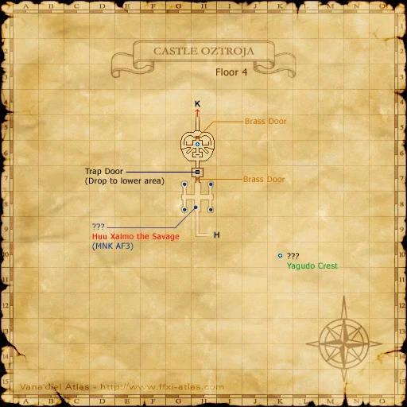

Level 75 reference · Zenith rules
|
IMPORTANT: Need to have started your nation mission 4-1 (Magicite) to complete this quest.
Walkthrough
Maat will ask you to get three crests (key items), the Orcish Crest, Quadav Crest and Yagudo Crest.
Orcish Crest
 Image source
Image source
- NOTE: You will need Invisibility for this entire section.
- Travel to Davoi and enter Monastic Cavern at H-11.
- Go to the SW corner of I-8 and zone back to Davoi. This will put you in the house area at the center of the Davoi map.
- Head east across the bridge, and then north onto the top of the fort at J-8 to a Tarutaru by the name of Sedal-Godjal.
- One party member will now need to do a mini-quest to get the Crimson Orb, which will open the Wall of Banishing so that you can pass. To get the quest, you must touch the Wall of Banishing, which is directly south of you in the SW corner of J-9. After touching the wall, speak to Sedal-Godjal and you will receive the quest.
- To complete the mini-quest you must go to the 4 red pools in Davoi. The Howling Pond (The Orcish Footsoldiers and Gladiators con Easy Prey, but don't aggro a level 60) is located at the NW corner of H-10. The Wailing Pond is at the NE corner of L-9. The Screaming Pond is at the NW corner of E-8. And the last one, the Groaning Pond, (which is not displayed on the map) is found by following the river at H-6 north and to the east.
- The White Orb key item will change to a Pink Orb when you have gone to 1 pool, a Red Orb when you have gone to 2 pools, and a Blood Orb when you have gone to 3 pools, before it finally becomes a Cursed Orb at the 4th pool.
- WARNING: When you dip the orb into the 4th pool it curses you, so plan accordingly.
- Return to Sedal-Godjal with the Cursed Orb, and he will turn it into the Crimson Orb.
- You can bypass the mini-quest if you got a party member who allready holds the Crimson Orb.
- Now go to the Wall of Banishing at the SW corner of J-9 and have the person with the Crimson Orb open the wall by clicking on it. This will open a hole in the wall which anyone can walk through.
- WARNING: The area by the Wall of Banishing is populated, so if you are doing this alone, make sure all the orcs are looking away when you drop invisibility to use the Crimson Orb. The zoneline is only a few feet past the wall so if you do get aggro you can run for it.
- Zone into Monastic Cavern on the other side of the wall. Hug the left wall and proceed to the SW corner of J-6. Careful of the true sight Orc NMs that lurk in this room (mainly along the eastern walls). Activate the ??? to receive your Orcish Crest. Note: You do not need to drop down the ledge to get to the "???," it's along the western wall.
Quadav Crest
- NOTE: You will want Sneak for this section, but Invisible is not needed (unless you come across Broo). A party member must have completed Mysteries of Beadeaux I and Mysteries of Beadeaux II (can only be flagged if you were on Magicite mission) to be able to complete this part.
- NOTE: If you are affected by The Mute's silence effect but do not remove is by normal means, it will last a very long time. (Approximately 10-15 real life minutes.)
- NOTE: The Afflictor's curse will bring your HP and MP down far more than the average curse effect. (Approximately 10% of max HP and 50% of max MP.)
- TIP: Casters should bring Echo Drops to remove silence. The Afflictor machines you must pass will curse you, however you can avoid this by muting yourself with one of the Mute machines, and then using an echo drop to cure yourself once past the Afflictor.
- Enter Beadeaux and follow the tunnel down at H-7 (1st map).
- Then proceed to the tunnel up at F-8 (2nd map).
- Once above ground again, hug the right wall to the ramp at E-10 (1st map), (please note there is one Afflictor on your way to the ramp) and head to the north east section of the map with out falling down until you get to K-6. Make sure you have sneak on even if nothing aggroed you so far! Then jump down and take the tunnel at section K-6 (1st map).
- Once underground again, follow the path to M-8 (2nd map) and then zone into Qulun Dome. (There are three Afflictors in a row here)
- The crest is located on the borderline of I-6/7, this is on the far wall of the second room.
- In the first room is most likely an NM, the Ruby Quadav. This NM has True Hearing so it can hear through Sneak. However, you will want to have sneak up to go past the other two that like to hang out there.
- A party member that has all three key items (same key items required to enter Magicite Room) must open the door. This door opens for the entire party/alliance. It can be opened from the inside.
- When you go through the door into the second room, there will be 2-3 different NMs with True Hearing along the northeast corner of the room. Avoid them and find the ??? as quickly as possible (located in northwest corner of the room). As soon as you hit it and receive the Quadav Crest, warp away.
Yagudo Crest
- NOTE: to solo this part you need some kind of speed enhancement


Image source
- NOTE: You will only need Invisibility for this entire section. Sneak around bats if you bring a lower level.
- NOTE: Avoid the leeches.
- NOTE: It is imperative that you start this quest at the very beginning of a new game day as the passwords will change every day.
- NOTE: This section is difficult to complete solo. It might be done with a speed enhancing mechanism but it will be hard.
- NOTE: You may want a Thief with Hide in your party.
- NOTE: To light the torches you must have the Yagudo Torch from Mission 4-1.
- Enter Castle Oztroja
- For the first part you will need to find out what the password of the day is, which requires collecting the information from 3 brass statues.
- Head to the SE corner of H-8 and open the brass door. Click on the statue inside to receive the 1st password.
- Now head to the door at I-8 and then go up the stairs to the 2nd map. On this map, head to the exit at G-7 and zone over onto the next map. On the next map head north to I-7 and zone over to yet another map. Now head to the SE corner of H-9 and open the brass door and receive the 2nd password from the statue.
- Proceed back along the same path to the 2nd map. The 3rd statue is located on the NW corner of I-8. If you've never experienced this section of the map before there are blocker points preventing most of the "obvious" paths and forcing you to walk around the outside.
- Now that you have visited 3 statues, you should have 3 passwords. The possible passwords are: Domi, Puqu, Gadu, Deggi, Mjuu, Xalmo, Haqa, Mong, Ouzi, Duzu, Buxu, Quu, Misu, Xicu, Ovzi, Duxo and Zhuu. Use these if the day changes and you are forced to "guess" later on in the quest, and they are also case sensitive when opening the Brass Door on the 4th floor.
- From the 3rd statue point head to the 4 lever door at the SW corner of G-8. You can find the combination to the door at the dead-end at (I-10). If you were not aggroed before you will be once going through this door, plan accordingly!
- Once through the door, head up the stairs and zone over (G-9) onto a new map.
- The next map is pretty straightforward, just remain invis and don't step on the Yagudo Parasites (leeches), and proceed to the next map at H-11.
- You want to proceed through the Brass door at H-7 from here. To open the Brass door someone must light one of the 4 torches at G-7, G-8, H-7, or H-8. If you brought help that has NOT done Magicite Mission 4 you can light the torch while they pass through the Brass door. Then they can let you in with the lever behind the Brass door. There are no mobs behind the Brass door but you do not want to bring aggro mobs with you as you need time to work the mechanism.
- Light one torch, which opens the brass door at H-7. It can be done solo but is very difficult(see note below). It is recommended that a Thief with Hide to attempt to light the torches, as Hide works against Yagudo.
- A speed enhancment is necessary to do this part solo and Hermes Quenchers do wonderfully here. This is due in large part to the fact that the time it takes you to light a torch and run past the door is longer than the door actually stays open. Drop Invisibility (if it's up), use the drink (activates really quick), light the torch , re-invis (optional if you have Reraise effect on) and run through the door. If you do not re-invis chances are that you'll agro something. Get beyond the brass door and if you were unfortunate enough to grab agro on the way and can not kill it, go beyond the brass door and start attacking the mob. When you die, the mob will de-spawn after a little time and Reraise will catch you. You should have plenty of time to let Weakness wear off and you can continue.
- Once through the brass door, there will be a wooden plank with a red circle (trap door) in front of a Brass Statue. Have everyone stand on the plank. Click on the statue and input the passwords in the order that you got them shown on the Vana'diel Atlas maps. The trap door will open and everyone will fall through to the bottom. Don't worry about invisibility as the bottom of the trap door is safe.
- Once everyone has dropped down through the trap door, recast invisibility, and run down the long corridor leading to a large room with a series of ramps up to a center platform. The ??? to get the Yagudo Crest is located on the central platform. At this point you'll need to keep a lookout for the Yagudo NM (Generally the High Priest).
- Invisible will work on all the Yagudo in this area except the Notoriuos Monsters. Tzee Xicu the Manifest, Yagudo Avatar, Yagudo High Priest & Yagudo Templar all have True Sight so make sure you're well away from their sight line as they will attack when they see you.
- Wait for the Yagudo NM to be sufficiently far away from the center platform, then travel up the ramps to the center platform, standing "behind" any regular Yagudo which may be on that platform, drop invis, click the ??? and re-invis.
- If you are in a large group, I highly suggest you send people up one at a time so that if they get aggro, they can run to the base of the ramp and get KO'd in a suitable fashion and not take everyone else with them, but still be within tractor range.
- Once you have the three crests, return to Maat.
Game Description
Client: Maat (Grand Duke Palace, Ru'Lude Gardens)
Summary:
- Your innate limits can be pushed further by collecting the crests of the Orcs, the Quadav, and the Yagudo.
Adapted from Eden Wiki: Whence Blows the Wind · Contributors and history · CC BY-SA 4.0. Revision 46869. Layout, links and optional background text adapted for Zenith.